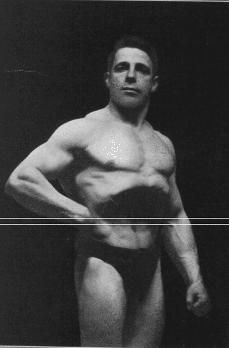
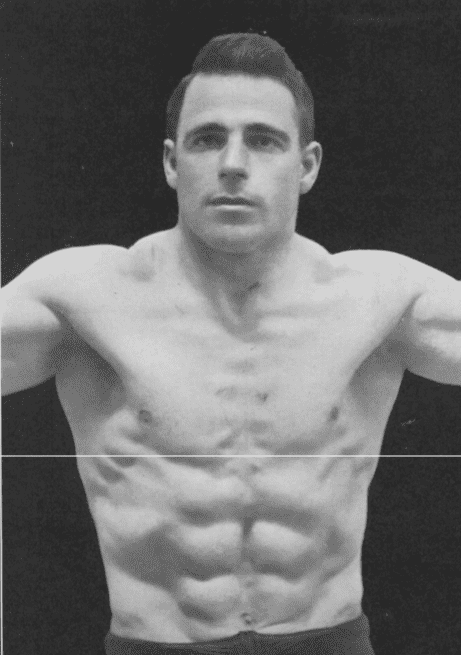
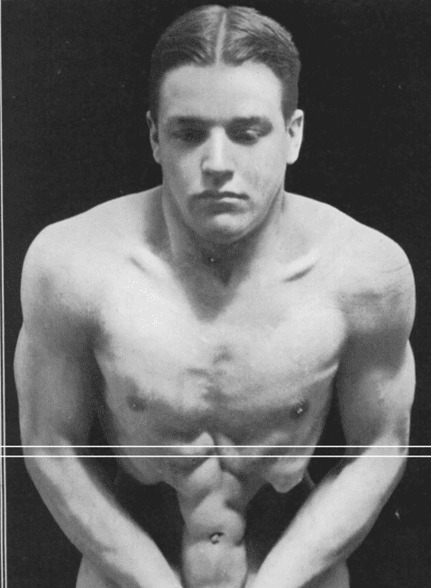
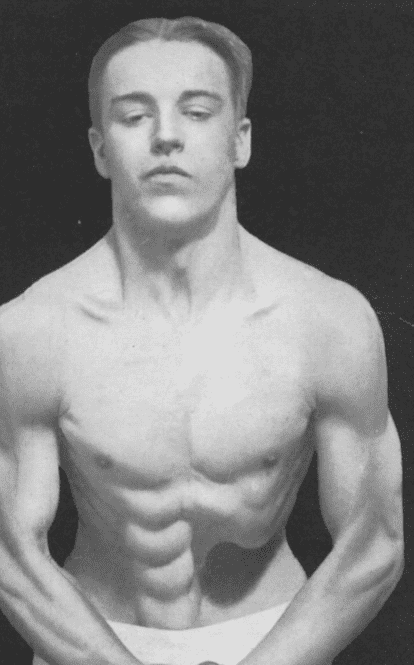

< < < Back
How To Maxald Your Abdominals For Better Digestion And Neurological Control – Return Of Kings
We all love Maxick here on Return of Kings, don’t we? Or at the very least, I and my other gilded age aficianados love the rural Austrian’s techniques of flexing various muscles that nobody could imagine were capable of being flexed.
By this point we’ve already learned how to do the latissimus dorsi, the trapezii, and the pectoral muscles, but there’s a lot more to do on the upper body. One of the biggest, most notable and, indeed, most important to do are those of the abdomen.
Of course, you are likely already capable of flexing the abdominal muscles if you’ve been working out a little bit and you’ve ever felt the need to pick up a girl by asking her to punch you in the stomach (trust me, it works—after you’ve steered the conversation towards fitness of course, don’t just say it as an opener like some sperg). But there is a lot more that you can do with your abdominal muscles than just tense them. Indeed, tensing them is by far the easiest thing you’ll do—and I say that because I found this to be the most difficult of all of the exercises in the Maxick program.
Abdominal Relaxation
Before you can begin flexing and controlling the abdominal muscles, you must know how to completely relax them. In other words a body pose must be adopted that removes all strain from the abdominal muscle. And as you can imagine, where there is abdominal relaxation, the abdominal wall is soft and can be depressed with the finger.
Abdominal relaxation, or abdominal depression, is an exercise that is affected by external air pressure but it is the key to control of the double and single abdominal isolations.
So for the depression, you breathe all the air out, relax the abdomen, then thrust the chest forwards BUT NOT upwards. If you’ve done it right your abdominals should depress ala the picture below.

If you lift the chest UP, then it won’t work there’s not enough air pressure. The key is not to exert your abdominal muscles at all. When he says “not upwards”, he means don’t lean back. Push your chest forward until you feel that tightness, then do it. You should see the abdominals notably depress. And of course, as with most things Maxick, the more body fat you have the less visible this will be.
Double Perpendicular Isolation
Once you have done the depression properly, raise the arms. From here you will begin swaying the body backwards and forwards until you get the contraction.
If that sounds uselessly vague, I apologize, but there really isn’t a better way of describing what you are supposed to do here. There is no explicit rule of how to move the body, you have to find it for yourself. In the book, Herr Maxick advocates that his students either go forward or backward. The contraction should be involuntary, or else the whole abdominal wall gets involved, and you only want to involve the rectus abdominus.

Central Single Perpendicular Isolation
Do the depression, and then without inhaling, press the hands in towards and slightly downwards the body, and you should see the effect of Figure 18. The hands should be at the base of the abdominal muscles, palms upwards, one hand resting in the other for convenience as in the picture. The wrist can be against the pelvis to start with, but you want to reduce hand pressure eventually. It is a question of correct position and movement.
Lean slightly forward when performing this exercise, to give increased abdominal play.

One Sided Perpendicular Isolation
This is exactly like the last one, except you only exert pressure with one hand on one side only. The simplest way to exercise this is to gradually change pressure from the center perpendicular to one side and then back, and then the other side. The lungs must remain deflated at all times.

Abdominal Rolling
This is accomplished by securing by contraction a depression in any part of the abdominal wall but bear in mind all other abdominal muscles must remain completely relaxed.
The position of the depression should change, working from the top to bottom. You can use your hands, but of course you should eventually do it hands free. When you do this properly it looks like a wave.
Sound difficult? It is, but doing so will not only strengthen and give you deeper neurological control over the abdominal muscles, but according to Maxick it’ll help with digestion as well. And who doesn’t want better digestion?
Read More: How To Control Your Shoulders With Maxalding